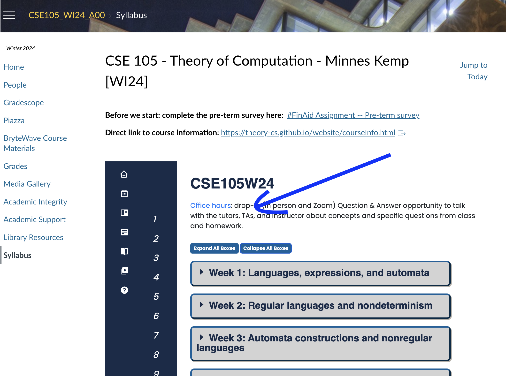

Warmup: Design a DFA (deterministic finite automaton) and an NFA (nondeterministic finite automaton) that each recognize each of the following languages over \(\{a,b\}\) \[\{ w \mid \text{$w$ has an $a$ and ends in $b$}\}\]
\[\{ w \mid \text{$w$ has an $a$ or ends in $b$}\}\]
Strategy: To design DFA or NFA for a given language, identify patterns that can be built up as we process strings and create states for intermediate stages. Or: decompose the language to a simpler one that we already know how to recognize with a DFA or NFA.
Recall (from Wednesday of last week, and in textbook Exercise 1.14): if there is a DFA \(M\) such that \(L(M) = A\) then there is another DFA, let’s call it \(M'\), such that \(L(M') = \overline{A}\), the complement of \(A\), defined as \(\{ w \in \Sigma^* \mid w \notin A \}\).
Let’s practice defining automata constructions by coming up with other ways to get new automata from old.
Suppose \(A_1, A_2\) are languages over an alphabet \(\Sigma\). Claim: if there is a NFA \(N_1\) such that \(L(N_1) = A_1\) and NFA \(N_2\) such that \(L(N_2) = A_2\), then there is another NFA, let’s call it \(N\), such that \(L(N) = A_1 \cup A_2\).
Proof idea: Use nondeterminism to choose which of \(N_1\), \(N_2\) to run.
Formal construction: Let \(N_1 = (Q_1, \Sigma, \delta_1, q_1, F_1)\) and \(N_2 = (Q_2, \Sigma, \delta_2,q_2, F_2)\) and assume \(Q_1 \cap Q_2 = \emptyset\) and that \(q_0 \notin Q_1 \cup Q_2\). Construct \(N = (Q, \Sigma, \delta, q_0, F_1 \cup F_2)\) where
\(Q =\)
\(\delta: Q \times \Sigma_\varepsilon \to \mathcal{P}(Q)\) is defined by, for \(q \in Q\) and \(x \in \Sigma_{\varepsilon}\): \[\phantom{\delta((q,x))=\begin{cases} \delta_1 ((q,x)) &\qquad\text{if } q\in Q_1 \\ \delta_2 ((q,x)) &\qquad\text{if } q\in Q_2 \\ \{q1,q2\} &\qquad\text{if } q = q_0, x = \varepsilon \\ \emptyset\text{if } q= q_0, x \neq \varepsilon \end{cases}}\]
Proof of correctness would prove that \(L(N) = A_1 \cup A_2\) by considering an arbitrary string accepted by \(N\), tracing an accepting computation of \(N\) on it, and using that trace to prove the string is in at least one of \(A_1\), \(A_2\); then, taking an arbitrary string in \(A_1 \cup A_2\) and proving that it is accepted by \(N\). Details left for extra practice.
Example: The language recognized by the NFA over \(\{a,b\}\) with state diagram
is:
Could we do the same construction with DFA?
Happily, though, an analogous claim is true!
Suppose \(A_1, A_2\) are languages over an alphabet \(\Sigma\). Claim: if there is a DFA \(M_1\) such that \(L(M_1) = A_1\) and DFA \(M_2\) such that \(L(M_2) = A_2\), then there is another DFA, let’s call it \(M\), such that \(L(M) = A_1 \cup A_2\). Theorem 1.25 in Sipser, page 45
Proof idea:
Formal construction:
Example: When \(A_1 = \{w \mid w~\text{has an $a$ and ends in $b$} \}\) and \(A_2 = \{ w \mid w~\text{is of even length} \}\).
Suppose \(A_1, A_2\) are languages over an alphabet \(\Sigma\). Claim: if there is a DFA \(M_1\) such that \(L(M_1) = A_1\) and DFA \(M_2\) such that \(L(M_2) = A_2\), then there is another DFA, let’s call it \(M\), such that \(L(M) = A_1 \cap A_2\). Sipser Theorem 1.25, page 45
Proof idea:
Formal construction:
So far we have that:
If there is a DFA recognizing a language, there is a DFA recognizing its complement.
If there are NFA recognizing two languages, there is a NFA recognizing their union.
If there are DFA recognizing two languages, there is a DFA recognizing their union.
If there are DFA recognizing two languages, there is a DFA recognizing their intersection.
Our goals for today are (1) prove similar results about other set operations, (2) prove that NFA and DFA are equally expressive, and therefore (3) define an important class of languages.
Suppose \(A_1, A_2\) are languages over an alphabet \(\Sigma\). Claim: if there is a NFA \(N_1\) such that \(L(N_1) = A_1\) and NFA \(N_2\) such that \(L(N_2) = A_2\), then there is another NFA, let’s call it \(N\), such that \(L(N) = A_1 \circ A_2\).
Proof idea: Allow computation to move between \(N_1\) and \(N_2\) “spontaneously" when reach an accepting state of \(N_1\), guessing that we’ve reached the point where the two parts of the string in the set-wise concatenation are glued together.
Formal construction: Let \(N_1 = (Q_1, \Sigma, \delta_1, q_1, F_1)\) and \(N_2 = (Q_2, \Sigma, \delta_2,q_2, F_2)\) and assume \(Q_1 \cap Q_2 = \emptyset\). Construct \(N = (Q, \Sigma, \delta, q_0, F)\) where
\(Q =\)
\(q_0 =\)
\(F =\)
\(\delta: Q \times \Sigma_\varepsilon \to \mathcal{P}(Q)\) is defined by, for \(q \in Q\) and \(a \in \Sigma_{\varepsilon}\): \[\delta((q,a))=\begin{cases} \delta_1 ((q,a)) &\qquad\text{if } q\in Q_1 \textrm{ and } q \notin F_1\\ \delta_1 ((q,a)) &\qquad\text{if } q\in F_1 \textrm{ and } a \in \Sigma\\ \delta_1 ((q,a)) \cup \{q_2\} &\qquad\text{if } q\in F_1 \textrm{ and } a = \varepsilon\\ \delta_2 ((q,a)) &\qquad\text{if } q\in Q_2 \end{cases}\]
Proof of correctness would prove that \(L(N) = A_1 \circ A_2\) by considering an arbitrary string accepted by \(N\), tracing an accepting computation of \(N\) on it, and using that trace to prove the string can be written as the result of concatenating two strings, the first in \(A_1\) and the second in \(A_2\); then, taking an arbitrary string in \(A_1 \circ A_2\) and proving that it is accepted by \(N\). Details left for extra practice.
Suppose \(A\) is a language over an alphabet \(\Sigma\). Claim: if there is a NFA \(N\) such that \(L(N) = A\), then there is another NFA, let’s call it \(N'\), such that \(L(N') = A^*\).
Proof idea: Add a fresh start state, which is an accept state. Add spontaneous moves from each (old) accept state to the old start state.
Formal construction: Let \(N = (Q, \Sigma, \delta, q_1, F)\) and assume \(q_0 \notin Q\). Construct \(N' = (Q', \Sigma, \delta', q_0, F')\) where
\(Q' = Q \cup \{q_0\}\)
\(F' = F \cup \{q_0\}\)
\(\delta': Q' \times \Sigma_\varepsilon \to \mathcal{P}(Q')\) is defined by, for \(q \in Q'\) and \(a \in \Sigma_{\varepsilon}\): \[\delta'((q,a))=\begin{cases} \delta ((q,a)) &\qquad\text{if } q\in Q \textrm{ and } q \notin F\\ \delta ((q,a)) &\qquad\text{if } q\in F \textrm{ and } a \in \Sigma\\ \delta ((q,a)) \cup \{q_1\} &\qquad\text{if } q\in F \textrm{ and } a = \varepsilon\\ \{q_1\} &\qquad\text{if } q = q_0 \textrm{ and } a = \varepsilon \\ \emptyset &\qquad\text{if } q = q_0 \textrm { and } a \in \Sigma \end{cases}\]
Proof of correctness would prove that \(L(N') = A^*\) by considering an arbitrary string accepted by \(N'\), tracing an accepting computation of \(N'\) on it, and using that trace to prove the string can be written as the result of concatenating some number of strings, each of which is in \(A\); then, taking an arbitrary string in \(A^*\) and proving that it is accepted by \(N'\). Details left for extra practice.
Application: A state diagram for a NFA over \(\Sigma = \{a,b\}\) that recognizes \(L (( a^*b)^* )\):
Suppose \(A\) is a language over an alphabet \(\Sigma\). Claim: if there is a NFA \(N\) such that \(L(N) = A\) then there is a DFA \(M\) such that \(L(M) = A\).
Proof idea: States in \(M\) are “macro-states" – collections of states from \(N\) – that represent the set of possible states a computation of \(N\) might be in.
Formal construction: Let \(N = (Q, \Sigma, \delta, q_0, F)\). Define \[M = (~ \mathcal{P}(Q), \Sigma, \delta', q', \{ X \subseteq Q \mid X \cap F \neq \emptyset \}~ )\] where \(q' = \{ q \in Q \mid \text{$q = q_0$ or is accessible from $q_0$ by spontaneous moves in $N$} \}\) and \[\delta' (~(X, x)~) = \{ q \in Q \mid q \in \delta( ~(r,x)~) ~\text{for some $r \in X$ or is accessible from such an $r$ by spontaneous moves in $N$} \}\]
Consider the state diagram of an NFA over \(\{a,b\}\). Use the “macro-state” construction to find an equivalent DFA.
Consider the state diagram of an NFA over \(\{0,1\}\). Use the “macro-state” construction to find an equivalent DFA.

Note: We can often prune the DFAs that result from the “macro-state” constructions to get an equivalent DFA with fewer states (e.g. only the “macro-states" reachable from the start state).
The class of regular languages
Fix an alphabet \(\Sigma\). For each language \(L\) over \(\Sigma\):
| There is a DFA over \(\Sigma\) that recognizes \(L\) | \(\exists M ~(M \textrm{ is a DFA and } L(M) = A)\) |
| if and only if | |
| There is a NFA over \(\Sigma\) that recognizes \(L\) | \(\exists N ~(N \textrm{ is a NFA and } L(N) = A)\) |
| if and only if | |
| There is a regular expression over \(\Sigma\) that describes \(L\) | \(\exists R ~(R \textrm{ is a regular expression and } L(R) = A)\) |
A language is called regular when any (hence all) of the above three conditions are met.
We already proved that DFAs and NFAs are equally expressive. It remains to prove that regular expressions are too.
Part 1: Suppose \(A\) is a language over an alphabet \(\Sigma\). If there is a regular expression \(R\) such that \(L(R) = A\), then there is a NFA, let’s call it \(N\), such that \(L(N) = A\).
Structural induction: Regular expression is built from basis regular expressions using inductive steps (union, concatenation, Kleene star symbols). Use constructions to mirror these in NFAs.
Application: A state diagram for a NFA over \(\{a,b\}\) that recognizes \(L(a^* (ab)^*)\):
Part 2: Suppose \(A\) is a language over an alphabet \(\Sigma\). If there is a DFA \(M\) such that \(L(M) = A\), then there is a regular expression, let’s call it \(R\), such that \(L(R) = A\).
Proof idea: Trace all possible paths from start state to accept state. Express labels of these paths as regular expressions, and union them all.
Add new start state with \(\varepsilon\) arrow to old start state.
Add new accept state with \(\varepsilon\) arrow from old accept states. Make old accept states non-accept.
Remove one (of the old) states at a time: modify regular expressions on arrows that went through removed state to restore language recognized by machine.
Application: Find a regular expression describing the language recognized by the DFA with state diagram

Definition and Theorem: For an alphabet \(\Sigma\), a language \(L\) over \(\Sigma\) is called regular exactly when \(L\) is recognized by some DFA, which happens exactly when \(L\) is recognized by some NFA, and happens exactly when \(L\) is described by some regular expression
We saw that: The class of regular languages is closed under complementation, union, intersection, set-wise concatenation, and Kleene star.
Prove or Disprove: There is some alphabet \(\Sigma\) for which there is some language recognized by an NFA but not by any DFA.
Prove or Disprove: There is some alphabet \(\Sigma\) for which there is some finite language not described by any regular expression over \(\Sigma\).
Prove or Disprove: If a language is recognized by an NFA then the complement of this language is not recognized by any DFA.
Fix alphabet \(\Sigma\). Is every language \(L\) over \(\Sigma\) regular?
| Set | Cardinality |
|---|---|
| \(\{0,1\}\) | |
| \(\{0,1\}^*\) | |
| \(\mathcal{P}( \{0,1\})\) | |
| The set of all languages over \(\{0,1\}\) | |
| The set of all regular expressions over \(\{0,1\}\) | |
| The set of all regular languages over \(\{0,1\}\) | |
Strategy: Find an invariant property that is true of all regular languages. When analyzing a given language, if the invariant is not true about it, then the language is not regular.
Pumping Lemma (Sipser Theorem 1.70): If \(A\) is a regular language, then there is a number \(p\) (a pumping length) where, if \(s\) is any string in \(A\) of length at least \(p\), then \(s\) may be divided into three pieces, \(s = xyz\) such that
\(|y| > 0\)
for each \(i \geq 0\), \(xy^i z \in A\)
\(|xy| \leq p\).
Proof illustration
True or False: A pumping length for \(A = \{ 0,1 \}^*\) is \(p = 5\).
For Monday: Pages 60-61 Theorem 1.47 and Theorem 1.48 (closure proofs).
For Wednesday: Theorem 1.39 “Proof Idea”, Example 1.41, Example 1.56, Example 1.58.
For Friday: Introduction to Section 1.4 (page 77)
For Week 4 Monday: Example 1.75, Example 1.77
Explain nondeterminism and describe tools for simulating it with deterministic computation.
Find equivalent DFA for a given NFA
Convert between regular expressions and automata
Use precise notation to formally define the state diagram of DFA, NFA and use clear English to describe computations of DFA, NFA informally.
Determine the language recognized by a given NFA
Design general constructions for NFA
Choose between multiple models to prove that a language is regular
Classify the computational complexity of a set of strings by determining whether it is regular
Explain the limits of the class of regular languages
Use the pumping lemma to prove that a given language is not regular.
Justify why the Pumping Lemma is true
Review quizzes based on class material each day.
Homework assignment 2 due next Thursday.
| Have you dropped by office hours yet? Find the schedule on the calendar: |  |